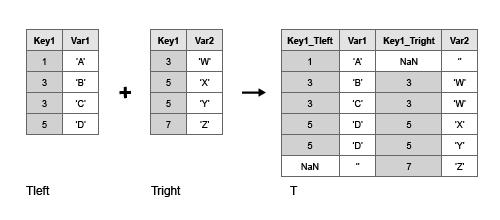

outerjoin
Outer join between two tables or timetables
Syntax
Description
T = outerjoin(Tleft,Tright)T, as the outer
join of Tleft and Tright using
key variables. An outer
join combines table rows where the key variables have matching values, but it also
includes rows where the key variables from one input table have no matches in the
other input table. For example, if Tleft has variables named
Key1 and Var1, and
Tright has variables Key1 and
Var2, then T=outerjoin(Tleft,Tright) uses
Key1 as a key variable.

By default, the key variables are:
Variables that have the same names in
TleftandTright, if both inputs are tables, or ifTleftis a timetable andTrightis a table.Vectors of row times, if both
TleftandTrightare timetables.
The matching values of the key variables in the left and right tables do not have to be in the same order. Outer joins can perform one-to-many and many-to-one matches between the key variables of the two tables. That is, a value that occurs once in a key variable of the left table can have multiple matches in the right table. Similarly, a value that occurs once in a key variable of the right table can have multiple matches in the left table.
You can perform outer joins only on certain combinations of tables and timetables.
If
Tleftis a table, thenTrightmust be a table.outerjoinreturnsTas a table.If
Tleftis a timetable, thenTrightcan be either a table or a timetable.outerjoinreturnsTas a timetable for either combination of inputs.
T = outerjoin(Tleft,Tright,Name,Value)Name,Value pair arguments.
Examples
Input Arguments
Name-Value Arguments
Output Arguments
More About
Algorithms
The vector of row labels from an input table or timetable can be used as a key variable. Row labels are the row names of a table or the row times of a timetable. To use this vector as a key, specify it as
'Row'(for the row names of a table), as the name of a timetable vector of row times, or as the value ofT.Properties.DimensionNames{1}TIn general,
outerjoincopies row labels from the input tableTleftto the output tableT.If
Tlefthas no row labels, thenThas no row labels.If
Tlefthas row labels, thenouterjoincopies row labels fromTleftto create row labels inT.If you specify row labels from both
TleftandTrightas a key pair, thenouterjoinmerges row labels fromTrightinto row labels ofTwhere needed.If you specify row labels of
Tleftas a key, but do not specify row labels ofTrightas the matching key, thenouterjoincreates default row labels inTwhere needed. Typically, default row labels areNaNs or missing valuesIf both
TleftandTrightare tables, but you do not specify either input’s row names as a key, thenouterjoindoes not create row names inT.If both
TleftandTrightare timetables, but you do not specify either input’s row times as a key, thenouterjoincopies row times fromTlefttoT. It also fills inNaNs orNaTs as row times where needed.
You cannot perform an outer join using the row labels of
Tleftas the left key and a variable ofTrightas the right key. To perform the outer join, convert the row labels ofTleftto a table variable and use the new table variable as a key.
Extended Capabilities
Version History
Introduced in R2013b